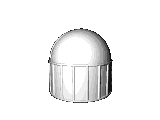
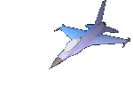

About me
I'm Adam, a high school senior planning on majoring in physics. Currently, I am reading "Stoner" by John Williams, and I am re-reading The Brothers Karamazov by Fyodor Dostoevsky. My favorite band is The Smiths. I also love Deftones, Modest Mouse, The Smashing Pumpkins, Pixies, The Cure, The Velvet Underground, and Radiohead. My favorite song is "There is a Light that Never Goes Out," followed closely by "Cemetery Gates." I like watching movies. My favorite movie is Interstellar but I like anything with Ryan Gosling (yes, anything), Whiplash, and pretty much anything you might find on a "Top 10 Sigma Movies" article (lol).

